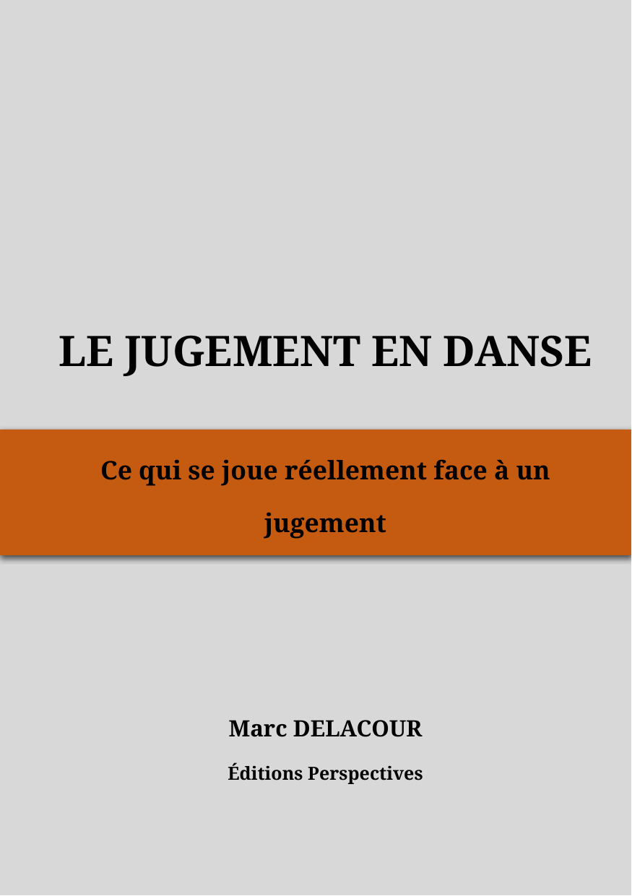

Juger et comprendre le jugement
Et si mieux juger commençait par mieux comprendre ce que notre regard sélectionne… et ce qu’il laisse échapper ?
Des ressources pour comprendre les mécanismes du jugement, interroger sa pratique et développer un regard plus lucide sans imposer une manière unique de juger.
Pour juges, élèves juges, chairpersons, formateurs, entraîneurs et danseurs.
Dans cet univers
Le jugement en danse · Assistant du juge inclus avec le livre
À découvrir : Cahiers d’application · Développer le regard du juge — 36 rendez-vous + hors-séries.
Ces deux formats prolongent eux aussi le travail avec l’Assistant du juge.